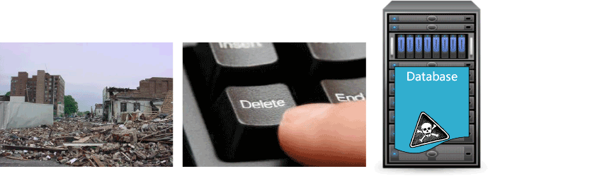
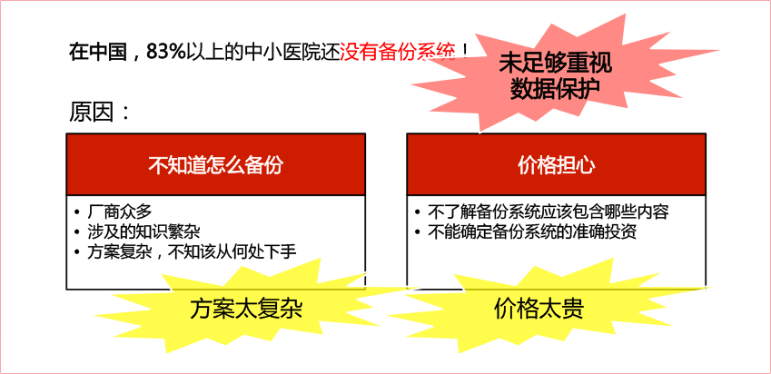

灾害可以来自很多方面….
联想解决方案
2011年，某省级大型三甲医院，RIS系统服务器文件系统发生逻辑故障，造成整个RIS系统无法启动，检验业务中断18小时，数据恢复用了2个星期。
2012年，北京某市级三甲医院HIS系统宕机2天，影响整体运营，期间的数据全部手工录入，导致大量病人滞留。问题反映到市长热线，卫生局现场调查事故原因。院方免除2日收费，损失严重，信息中心责任重大。
2013年，北京总后某三甲医院，因院区施工，电缆被挖断，数据中心瘫痪，事故上报总后领导，院方领导和计算机中心面临压力。
联想解决方案
门诊系统 —— 要求业务0中断
试想：门诊高峰期，业务一旦中断，场面将何等“壮观”！！！
医保实时结算 —— 要求数据0中断
医院数据一旦丢失，巨额的报销费用将可能蒙受损失！！！
医院核心系统潜伏着巨大风险
医院系统现状对容灾建设的制约
医院数据容灾建设的要点
- 统一存储
- 集成数据保护、虚拟化支持
- 兼容原有异构存储系统
升级改造原有存储系统
- 核心业务系统为全冗余
- 保障数据不丢失
- 保障业务不间断
消除所有单点故障
- 故障全自动切换，预留足够的时间在线解决问题
- 存储系统统一管理，降低管理难度，减少工作量
管理简易
这些是需要考虑的决策驱动因素
关于数据恢复粒度
医院主要应用的特点
选择适合业务等级的数据保护方案
各级别的数据保护方案
医院数据备份的现状和问题
什么是联想备份一体机

联想备份一体机能做什么
医院数据保护应用场景 - 数据库、影像、虚机、文档
联想备份一体机 - 医院经济快捷备份解决方案

联想备份一体机的特色
联想基于磁盘阵列的“连续数据保护”方案
RecoverPoint架构与原理
恢复操作一类DVR的任意时间点恢复
其他类似方案对比
VPLEX体系结构
VPLEX LOCAL应用场景 - 医院HIS等核心系统本地保护
VPLEX LOCAL应用场景 - 医院核心系统异地保护
VPLEX LOCAL应用场景 - 在双中心轻易实现Oracle RAC
Recover Point与VPLEX的结合
其他类似方案对比
联想交付式双活数据中心
VPLEX应用案例